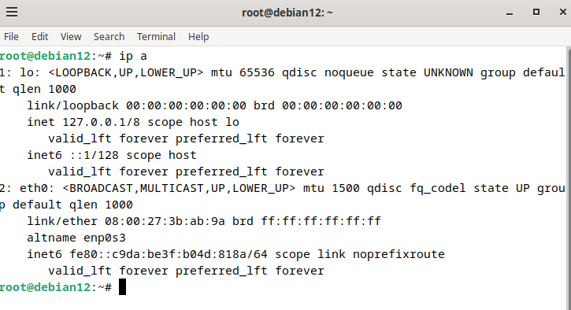
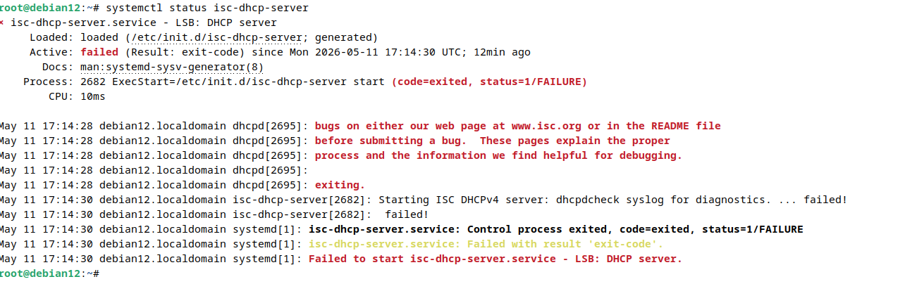
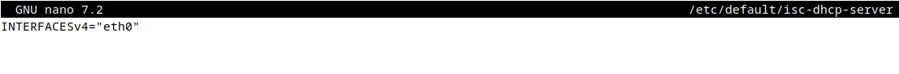
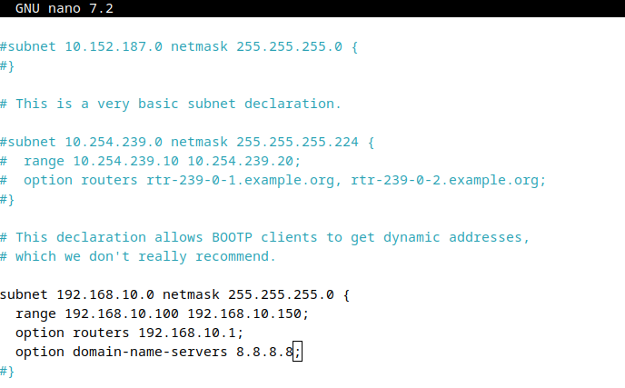
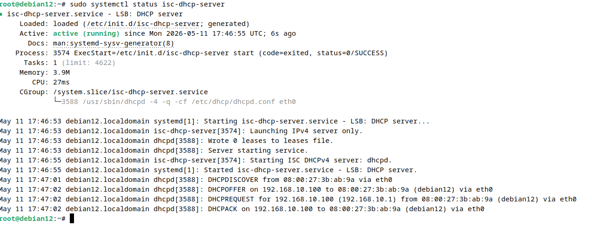
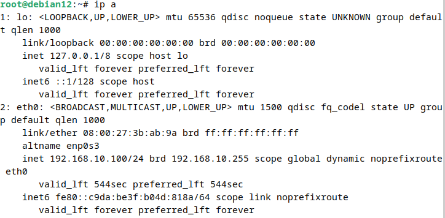
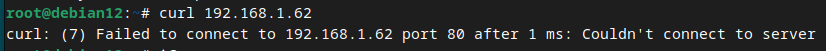
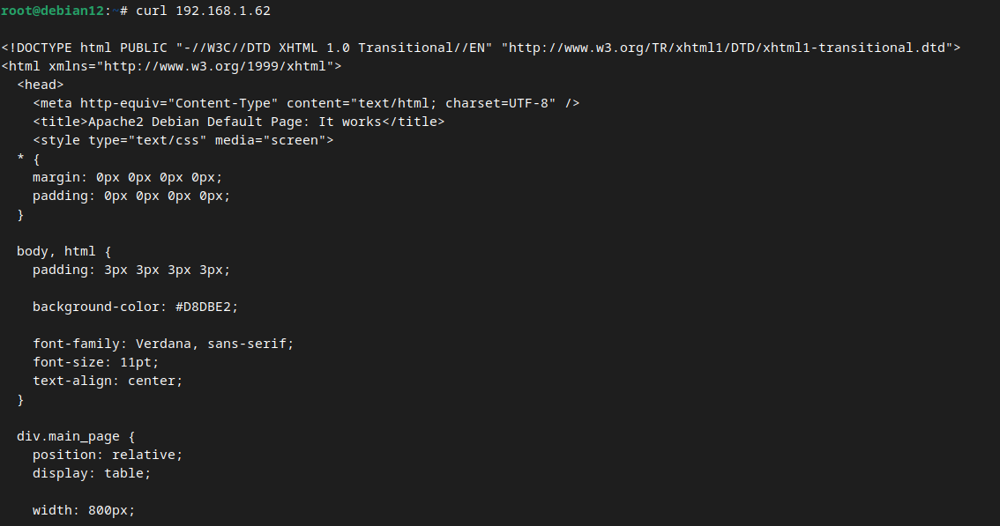

S’initier aux réseaux informatiques
Dans le cadre de la SAÉ 1.02 « S’initier aux réseaux informatiques », j’ai réalisé plusieurs manipulations sous Debian afin de découvrir le fonctionnement des services réseau et le dépannage informatique.
Cette SAE m’a permis de configurer différents services réseau, d’analyser des problèmes de communication et de comprendre les mécanismes de fonctionnement d’un réseau local.
Dans cette situation, j’ai mis en place un serveur DHCP sur une machine Debian afin de distribuer automatiquement des adresses IP aux postes du réseau.
Après configuration du serveur DHCP et du poste client, plusieurs tests réseau ont été réalisés afin de vérifier le bon fonctionnement de l’attribution automatique des adresses IP.
Lors des tests de connexion, le poste client ne recevait plus d’adresse IP automatiquement depuis le serveur DHCP.
Aucune adresse IP valide n’était attribuée à l’interface réseau du client.
Figure 1 — Absence d’adresse IP sur le poste client.

Après plusieurs vérifications sur le serveur Debian, j’ai constaté que le service DHCP était arrêté.
Figure 2 — Service DHCP arrêté sur le serveur Debian.

Le problème ne provenait donc pas du poste client, mais du serveur DHCP qui ne distribuait plus les paramètres réseau.
Pour corriger cette erreur, j’ai modifié le fichier :
J’ai ensuite configuré l’interface réseau utilisée par le serveur DHCP :
Figure 3 — Configuration de l’interface réseau du serveur DHCP.

J’ai également vérifié et complété le fichier DHCP :
Figure 4 — Configuration du fichier dhcpd.conf.

Après correction, j’ai redémarré le service DHCP :
Figure 5 — Service DHCP actif après correction.

Après renouvellement de la configuration réseau du poste client, celui-ci a correctement reçu une adresse IP dynamique.
Figure 6 — Attribution correcte d’une adresse IP au poste client.

Dans cette situation, j’ai installé et configuré un serveur web Apache sur une machine Debian afin d’héberger un site HTTP accessible depuis le réseau local.
Le serveur Apache fonctionnait correctement en local, mais les postes clients du réseau ne pouvaient pas accéder au site web.
Figure 7 — Échec d’accès au serveur Apache depuis le poste client.

Après plusieurs vérifications réseau, j’ai constaté que le service Apache écoutait uniquement sur l’interface locale 127.0.0.1.
Le problème provenait donc de la configuration du serveur Apache.
Pour corriger cette erreur, j’ai modifié le fichier de configuration suivant :
J’ai ensuite supprimé l’adresse 127.0.0.1 afin d’autoriser les connexions provenant du réseau local.
Après redémarrage du service Apache, le site web est devenu accessible depuis les autres machines du réseau.
Figure 8 — Accès réussi au serveur Apache après correction.

Cette SAE m’a permis de découvrir différentes situations de dépannage réseau sous Linux.
À travers ces manipulations, j’ai appris à analyser un problème, identifier son origine et appliquer une solution adaptée afin de rétablir le bon fonctionnement d’un service réseau.
Ce travail m’a également permis de mieux comprendre la configuration des services DHCP et Apache, l’utilisation des commandes Linux, ainsi que l’importance des fichiers de configuration dans l’administration réseau.